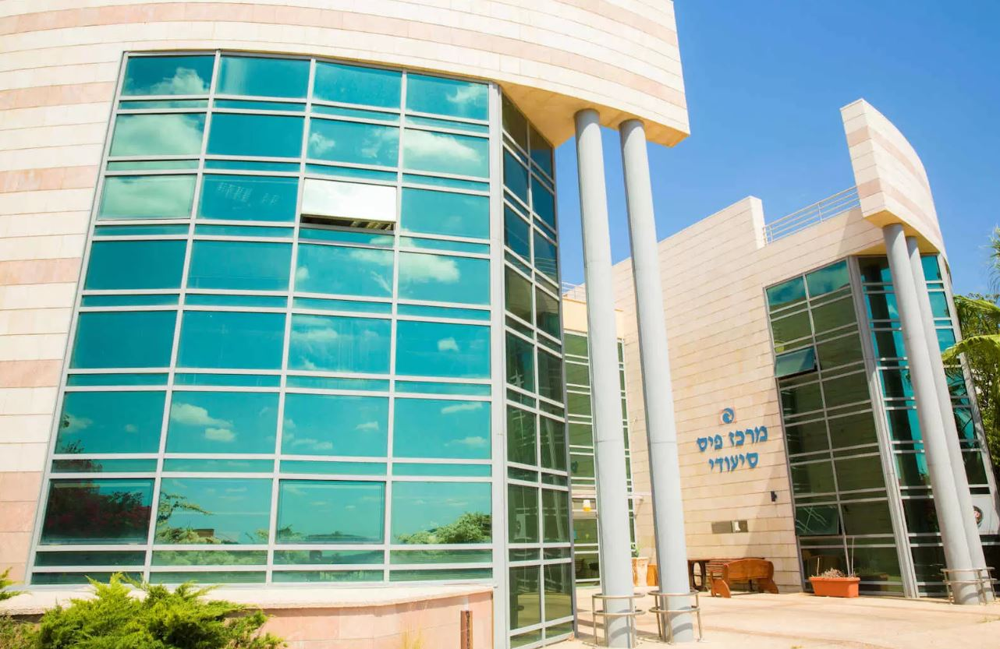

בית האבות הסיעודי נוף שלומי נחשב לאחד המובילים בסוגו באזור הצפון. אוכלוסיית הדיירים שלו רחבה באופן יחסי, ואלה מוצאים את מקומם באחת משלוש המחלקות הפועלות במקום: שתיים מהן סיעודיות (72 דיירים), ומחלקה נוספת, בת 30 מיטות, היא זו של תשושי הנפש.
נוף שלומי מציע לדייריו אפשרויות רבות. החדרים עצמם מרווחים ומאובזרים. בלובי רחב הידיים הנמצא במתחם ניתן למצוא פינות ישיבה, ומחוץ לשעריו רחבת דשא ירוקה, בה פינות ישיבה למכביר. לטובת הדיירים, פועלת גם מכונת שתייה, וכן פינות קפה ומאפה